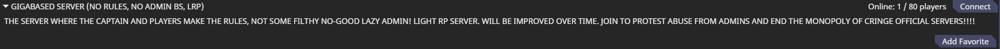

Huh, it's been a bit, hasn't it?
...
Well whatever, let's just get on with it.
A large part of SS14 is, of course, roleplay. But not everyone has the same tolerance for roleplay, and not everybody wants to roleplay anyway.
So, in order to make everyone happy, everyone came up with some labels that typically cause arguments and is probably not a good idea in the long run.
I uh, do not intend for that last statement to reflect any actual views, seriously.
So now introducing:
No RP (which has a much more common acronym which I'm not using because it shares one with roleplay of a certain political party) is the roleplay type in which you just say "nah i don't feel like it" and don't roleplay.
Typically servers without roleplay try to make up for it by adding in a load more game mechanics to make it more game-y.
However, people typically hate no roleplay, and typically associate it with anarchy (which it isn't, there's still rules), or just call it plain bad.
While, yes, this is a roleplay game, it's still a roleplay game, and you probably could have a lot more dumb fun without roleplay then with.
YMMV, of course.
With an image completely ruined by Wizard's Den Lizard (due to it's playerbase, it's ALWAYS the playerbase), low roleplay is where you're at least trying to roleplay.
Typically having a tiny bit of roleplay, and a lot more gameplay, it usually is an okay-ish middle ground for those who actually want roleplay but also want to have some fun chaos.
Speaking of middle grounds...
Medium roleplay is the halfway point between dumb fun and doing paperwork.
If you actually want some REAL roleplay, but still want some funny chaos happening sometimes, MRP is (probably) for you.
For those that actually want roleplay (or are just insane) though, we come to our final stop.
Fun fact: a large chunk of the SS14 devs prefer HRP, but it's not really that important.
HRP is what you get when you think "man, i wish i was a different person entirely" and decide to do it in a video game.
Typically involving a shit-load of rules, and some very strict administrators, HRP is not for the faint of heart.
Of course, that never means people don't try, and people will ALWAYS try a hard thing, and some might even love it.
So, how was the utterly useless guide that explains literally nothing at all?
Useless? Yeah, expected that.
"but wait!", I hear you say. "i just joined this random server, and it's completely different!"
Well, first of all, (as of time of writing) most servers haven't really changed that much. Although, it IS worth saying that some servers have changed a fair amount of stuff to the point of being very different, gameplay-wise.
Now, I'm biased, that you should know. I don't exactly play much, and I literally have never stepped foot in a server that doesn't speak english.
However, I have other people who share the same braincell as I with experiences of these different servers. And while I've probably forgotten most of them, it's probably accurate enough that you can get an idea of how creative the community overall is right now.
So, here's my very biased and awful list of forks that I know of.
by the way barotrauma had its 1.0 update recently you should go play it it's much more fun then ss14
Now obviously I'm missing servers, but I honestly don't play the game that much to know anymore differences, nor anymore servers.
"wait wait wait" you're now saying. "what the hell is this server it looks odd" etc etc.
So, fun fact, the hub has rules. There's a large guide to them which you can see on some webpage I don't feel like linking right now, but know that they exist and is a bit strict.
Now, the hub is a very active place that needs constant moderation to make sure things are safe for work and easy to use. That means rules, and they need to constantly change.
However, some rules which I'm probably sure will stay are:
The server needs a language tag, like [EN] or [RU].
The server needs to mark if it's an 18+ server with [+18] or something similar.
The server needs contact information, as in Discord contact information.
The server needs to not mine cryptocurrency and anything related. No really, that's a rule. Should probably go without saying, honestly.
And the obvious "no hate speech" rule.
So, if you want to be a good citizen on the hub, make sure you report that to someone on the SS14 discord. There's a link to it on the website.
But let's be real, "GIGABASED SERVER WITHOUT ADMINISTRATION" was a funny hub entry to see while it lasted.
Obviously nobody joined it.